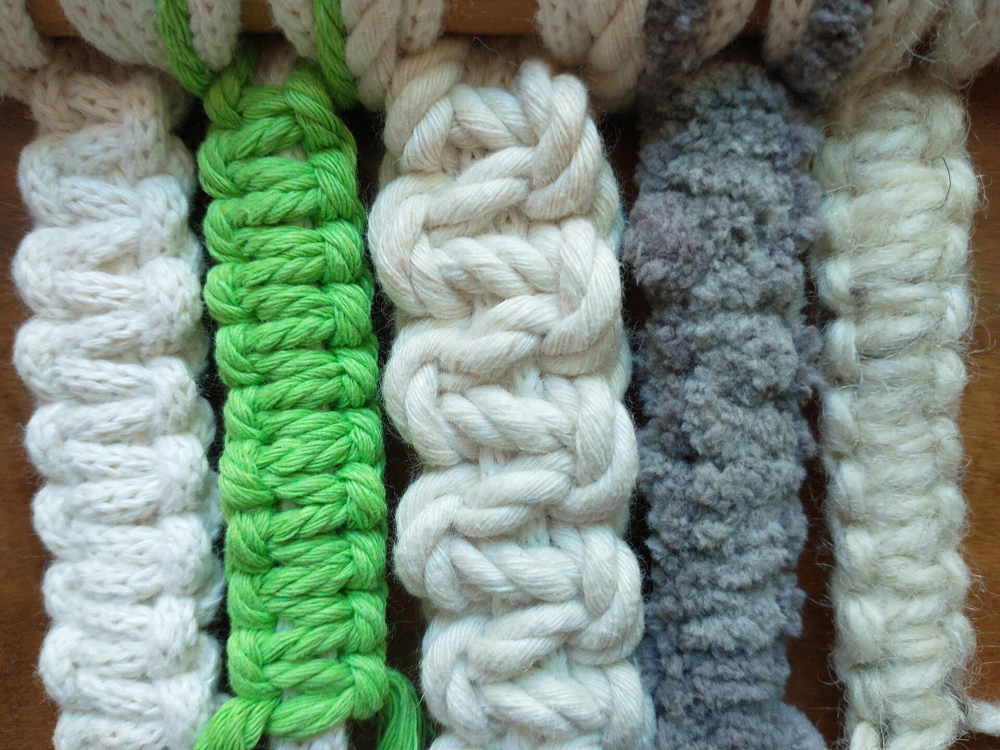
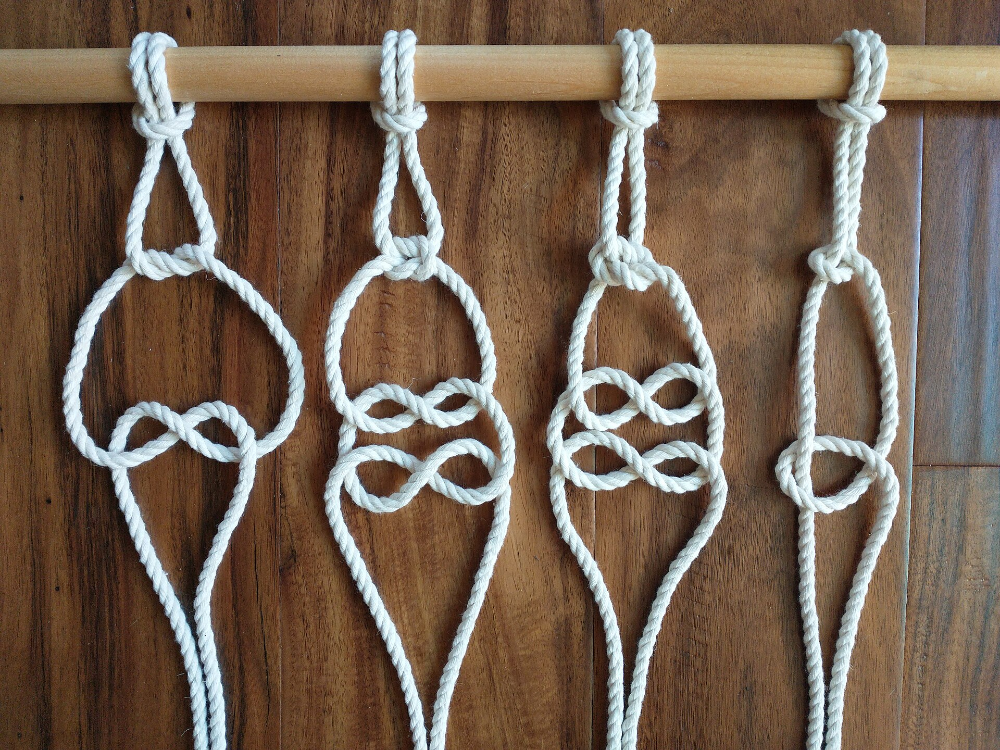
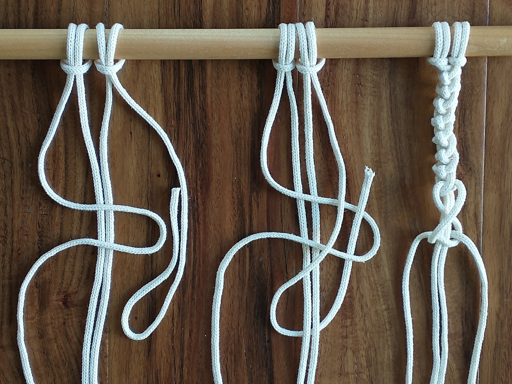
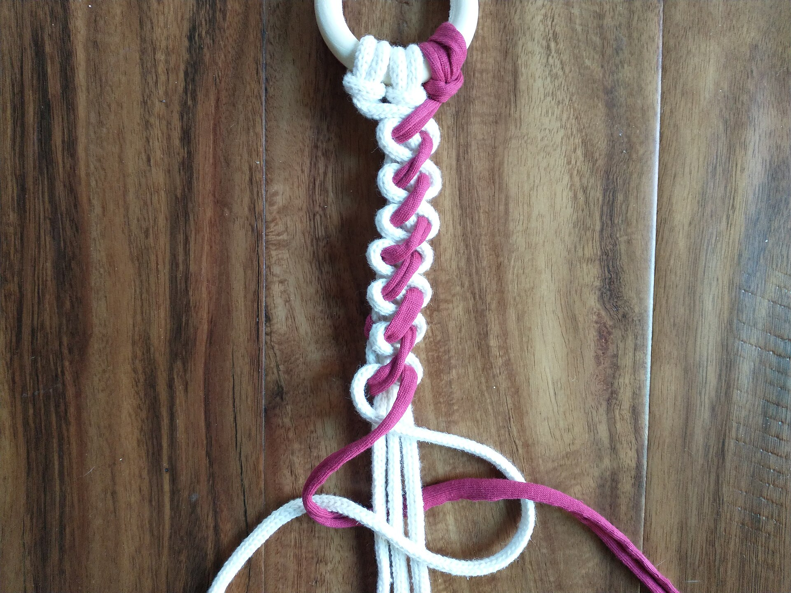

هر گره، یک
تصمیم دست
گِرِه یک کارگاه تکنفره در تهران است. همهی کارها — از انتخاب نخ تا آخرین گره و منگولهچینی — با همان دست انجام میشود؛ بههمین دلیل تعداد کارها در ماه محدود است.
مکرومه در برابر بافتنی، ریاضیِ طناب است: تکرارِ منظمِ چند نوع گره، که با تغییر فشار و فاصله، نقش میسازد. کارهای این مجموعه بیشتر بر پایهٔ گره مربعی و نیمگره است، با کمی گره جوزفین برای سطحهای گرد.
نخها پنبهای و کنفیاند؛ میچویها از چوب گردو یا بامبوی خشکشده. چیزی که در عکسها میبینید، همان چیزی است که بافته میشود — فقط نور کارگاه با نور خانهٔ شما فرق دارد.

این اعداد توصیف کارگاه است، نه آمار فروش — در محیط واقعی از دادهٔ خودتان جایگزین کنید.
دستخطِ کارگاه
گرههایی که بیشتر استفاده میکنم. مسیرها با اسکرول «بسته» میشوند — همانطور که در بافت بسته میشوند.
یک تابلو از نخ تا دیوار

برش و آویزان کردن تارها
نخها روی میچوی چوبی آویزان میشوند؛ ارتفاع میچو روی دیوارِ مقصد علامت میخورد تا قد کار دقیق دربیاید. اگر قد را اشتباه بگیرم، اصلاحش یعنی باز کردن چند صد گره.
بافت بدنه
یک تابلوی ۸۰ سانتی حدود ۳۰ ساعت کار خالص میبرد. هر ده ردیف، کار از میچو باز میشود تا فشار گرهها یکدست بماند — وگرنه پایین کار کج میایستد.


شانهکاری و تحویل
آخرین مرحله، شانه کردن منگولهها و قیچیی همتراز است. کار رولنشده و آویزان ارسال میشود تا گرهها له نشوند؛ کارتنگی نصب و نگهداری هم داخل بسته است.
نوشتههای کارگاه
نوشتهها همان چیزی است که در کلاسهای حضوری میگویم؛ کوتاه و عملی.
قبل از سفارش
آیا کار دقیقاً مثل عکس است؟
نقش و ابعاد بله؛ اما چون همهی گرهها دستیاند، فشار نخ و دهانهٔ منگولهها کمی فرق میکند. اگر کار را در خانهٔ خودتان میبینید، قبل از پرداخت عکس همان قطعه را میفرستم.
برای فضای مرطوب مثل آشپزخانه مناسب است؟
پنبه و کنف رطوبت مستقیم را دوست ندارند. اگر دیوار شما کنار اجاق یا سینک است، نخ آکرولیک پیشنهاد میکنم که قابل شستوشو است و رنگش در برابر بخار ثبات بهتری دارد.
چطور نصب کنم که کج نشود؟
برای کارهای زیر دو کیلو، یک پیچ و ریل کافی است. برای کارهای سنگینتر، دو پیچ در دو سر میچو بزنید و با تراز لیزری یا یک لیوان آب روی میز، افقی بودن را چک کنید. کارتنگی نصب داخل بسته هست.
مدت تحویل چقدر است؟
کارهای آماده: ۲ تا ۵ روز کاری. سفارش اختصاصی با ابعاد دلخواه: بسته به اندازه، بین ۱۰ تا ۲۵ روز کاری — بعد از تأیید طرح و پیشپرداخت، در نوبت بافت قرار میگیرید.
امکان مرجوعی هست؟
کارهای آماده تا ۷ روز، در صورتی که استفاده نشده و بستهبندی سالم باشد. سفارش اختصاصی چون برای اندازه و رنگ دلخواه شما بافته میشود، مرجوعی ندارد — مگر در نقص بافت.
دیوار شما، نقش خودتان
قد و عرض، رنگ نخ، نوع منگوله — هر سه را با هم تصمیم میگیریم.
شروع سفارش اختصاصی